a) More data means that the zero-mean error should itself play a smaller part in the overall estimate, as you’re taking a larger sample of the error distribution as well which should tend to zero. Thus the tendency for a flexible method to overlearn would be diminished.
b) With a small dataset and a large amount of predictors a flexible method will almost be guaranteed to overfit the data. Hence an inflexible method is better in this case.
c) Highly non-linear responses require more flexible learning methods. Inflexible methods won’t be able to adapt appropriately and will resut a high bias term.
d) An inflexible method will be better as the high variance in the error terms will make a flexible method overfit the data.
a) Regression, Inference. $n=500$, $p=3$.
b) Classification, Prediction. $n=20$, $p=13$.
c) Regression, Prediction. $n=52$, $p=3$.
Just remember that the output variable is not a predictor despite the question wording grouping them together.
a)
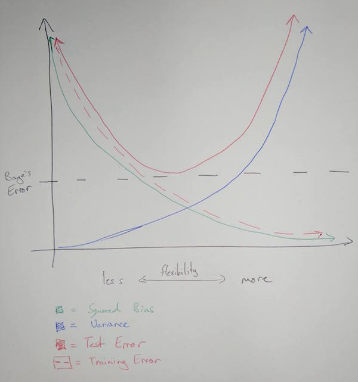
b) Bias is a result of the mathematical form of the training model not being matched to the underlying mathematical reality of the system being studied. Generally speaking, the more flexible the training model is the more likely it is to match the mathematical form of the system in question.
Variance refers to the change in our estimate of the systematic information function $\hat{f}$ when we use different sets of training data. It is minimal when flexibility is minimal, as is expected. When more flexibility is introduced variance will change as the learning method will be able to adapt to points easier as it has more degrees of freedom.
Test error is minimal at the point where flexibility most closely matches the underlying mathematical form of the system. Note that test error can never be below the Baye’s error.
Training error is reduced as more flexibility is introduced due to the tendency for the model to incorporate the error in each point into it’s estimate.
Baye’s error is an irreducible constant that exists with no relation to the choice of learning model.
a) Predicting the winner in a horse race. Predictors would be race history, frequency, fitness etc.
Using a classification of what political parties people vote for to infer information about what underlying demographic correspond to each political party. Predictors can again be age, salary, ethnicity, occupation, etc.
Classifying observed astronomical objects automatically. Predictors would be luminosity, color, etc. This is a prediction problem.
b) Predicting salary of an individual. Predictors would be education level, age, ethnicity, sex. Prediction is the goal.
Inferring cause of unit defects in a manufacturing process where failure rate is the output variable. Predictors would be machinery, group, process variations, bins, variation in purchased component supplier.
Predicting budget necessary for a project. Predictors would be staff, length, scope, departments, licensing, etc.
c) Targeted marketing. Want to cluster consumers into known demographics to better target advertising towards each individual.
Cluster movies into groups by their characteristics. Allows you to predict content which a particular user may enjoy based on their own vieweing history.
Animal clustering. Group animals by characteristics to more easily understand possible evolutionary processes.
| Advantages | Disadvantages | |
|---|---|---|
| More Flexible | Better for highly non-linear relationships | More difficult to compute Can overfit data, incorporating irreducible error into the model |
| Less Flexible | Easy to compute Minimal variation |
Cannot fit non-linear data adequately |
| Advantages | Disadvantages | |
|---|---|---|
| Parametric | Problem reduced to predicting a set of parameters for f | Assuming a form for f can restrict the accuracy of the generated model, aka high bias low variance. |
| Non-Parametric | No form assumption taken for f so same process can be used to fit highly varied and non-linear sets of data. | Very difficult to compute in comparison to a parametric model. Need a greater number of observations to generate a good model. |
a)
| Obs. | Distance $\pmb{(0, 0, 0)}$ |
|---|---|
| 1 | 3 |
| 2 | 2 |
| 3 | $\sqrt{10}$ |
| 4 | $\sqrt{5}$ |
| 5 | $\sqrt{2}$ |
| 6 | $\sqrt{3}$ |
b) Green. With K=1 our prediction is simply based on the output of a single nearest neighbour, which is Observation 5 as found in question 1.
c) Observations 2, 5, and 6 are included. That’s two red, one green outcome. Hence red is the prediction.
d) Small K is better for highly non-linear decision boundaries. Including less items in the nearest neighbour calculations means there is less overlap of observations used among varying points, allowing subsequent points to vary more rapidly in their decision predictions.
a)
college = read.csv(file = "../datasets/College.csv", header = TRUE)
b)
Fix can take a while… you have to close the window before the program proceeds as well.
#fix(college)
Let’s set rownames based on the University names in the first column, then remove that column from the actual data.
rownames(college)=college[,1]
college = college[,-1]
#fix(college)
c)
i.
summary(college)
## Private Apps Accept Enroll Top10perc
## No :212 Min. : 81 Min. : 72 Min. : 35 Min. : 1.00
## Yes:565 1st Qu.: 776 1st Qu.: 604 1st Qu.: 242 1st Qu.:15.00
## Median : 1558 Median : 1110 Median : 434 Median :23.00
## Mean : 3002 Mean : 2019 Mean : 780 Mean :27.56
## 3rd Qu.: 3624 3rd Qu.: 2424 3rd Qu.: 902 3rd Qu.:35.00
## Max. :48094 Max. :26330 Max. :6392 Max. :96.00
## Top25perc F.Undergrad P.Undergrad Outstate
## Min. : 9.0 Min. : 139 Min. : 1.0 Min. : 2340
## 1st Qu.: 41.0 1st Qu.: 992 1st Qu.: 95.0 1st Qu.: 7320
## Median : 54.0 Median : 1707 Median : 353.0 Median : 9990
## Mean : 55.8 Mean : 3700 Mean : 855.3 Mean :10441
## 3rd Qu.: 69.0 3rd Qu.: 4005 3rd Qu.: 967.0 3rd Qu.:12925
## Max. :100.0 Max. :31643 Max. :21836.0 Max. :21700
## Room.Board Books Personal PhD
## Min. :1780 Min. : 96.0 Min. : 250 Min. : 8.00
## 1st Qu.:3597 1st Qu.: 470.0 1st Qu.: 850 1st Qu.: 62.00
## Median :4200 Median : 500.0 Median :1200 Median : 75.00
## Mean :4358 Mean : 549.4 Mean :1341 Mean : 72.66
## 3rd Qu.:5050 3rd Qu.: 600.0 3rd Qu.:1700 3rd Qu.: 85.00
## Max. :8124 Max. :2340.0 Max. :6800 Max. :103.00
## Terminal S.F.Ratio perc.alumni Expend
## Min. : 24.0 Min. : 2.50 Min. : 0.00 Min. : 3186
## 1st Qu.: 71.0 1st Qu.:11.50 1st Qu.:13.00 1st Qu.: 6751
## Median : 82.0 Median :13.60 Median :21.00 Median : 8377
## Mean : 79.7 Mean :14.09 Mean :22.74 Mean : 9660
## 3rd Qu.: 92.0 3rd Qu.:16.50 3rd Qu.:31.00 3rd Qu.:10830
## Max. :100.0 Max. :39.80 Max. :64.00 Max. :56233
## Grad.Rate
## Min. : 10.00
## 1st Qu.: 53.00
## Median : 65.00
## Mean : 65.46
## 3rd Qu.: 78.00
## Max. :118.00
ii.
pairs(college[, 1:10])
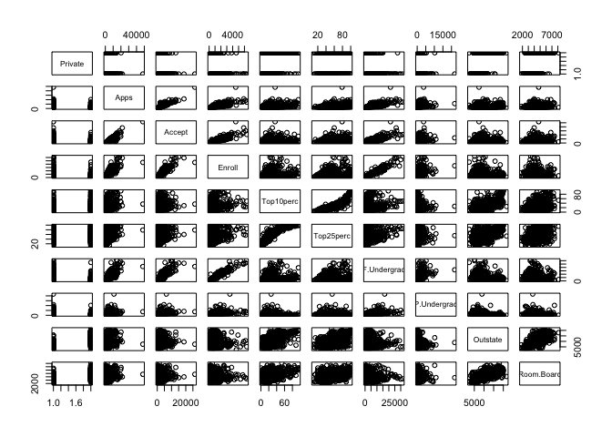
iii.
Remember that plot() produces boxplots when the x axis variable is categorical, as should be expected. If it’s numerical it will produce scatterplots. Hence remember to order the arguments to the function appropriately.
attach(college)
plot(Private, Outstate, xlab="Private", ylab="Out-out-state")
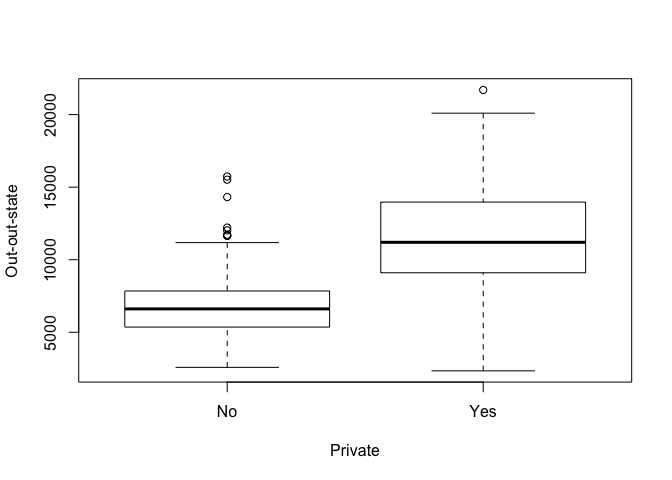
iv.
We first make a vector of “No” for as many universities as there are in the dataset. We then set some elements of that vector to “Yes” when the corresponding university has greater than 50% of their own students coming from the top 10% of their respective high schools. We then simply add the data to the college dataset and view a summary of it.
Elite = rep("No", nrow(college))
Elite[college$Top10perc>50] = "Yes"
Elite = as.factor(Elite)
college = data.frame(college, Elite)
summary(college$Elite)
## No Yes
## 699 78
plot(Elite, Outstate, xlab="Elite", ylab="Out-of-state")
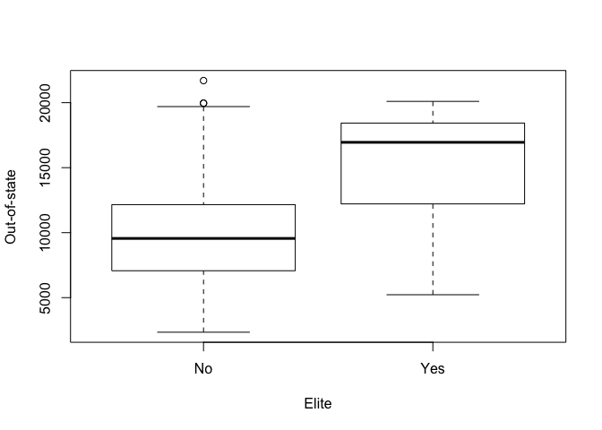
v)
par(mfrow=c(2,2))
attach(college)
## The following object is masked _by_ .GlobalEnv:
##
## Elite
## The following objects are masked from college (pos = 3):
##
## Accept, Apps, Books, Enroll, Expend, F.Undergrad, Grad.Rate,
## Outstate, P.Undergrad, perc.alumni, Personal, PhD, Private,
## Room.Board, S.F.Ratio, Terminal, Top10perc, Top25perc
hist(Apps, main="Histogram of Applications Received")
hist(perc.alumni, col="red", main="Histogram of Alumni Donation Rate")
hist(S.F.Ratio, col="purple", breaks=10, main="Histogram of Student/Faculty Ratio")
hist(Expend, breaks=100, main="Histogram of Expenditure per Student")
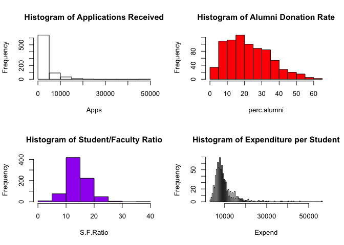
vi) Let’s explore more into data related to ‘elite’ schools. Our operational definition for an elite school is “more than 50% of new students were in the top 10% of their high school class”.
plot(Elite, Expend, xlab="Elite", ylab="Expenditure per Student")
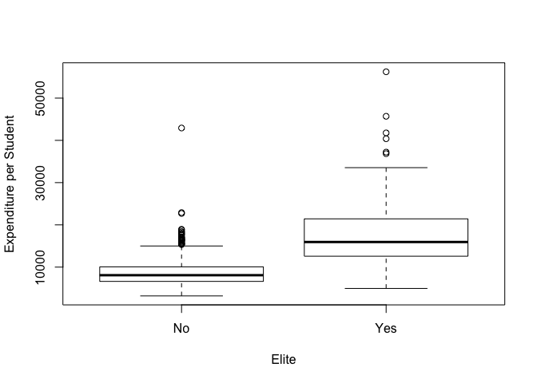
As expected, institutions which are considered ‘elite’ spend more per student.
plot(Elite, Grad.Rate, xlab="Elite", ylab="Graduation Rate")
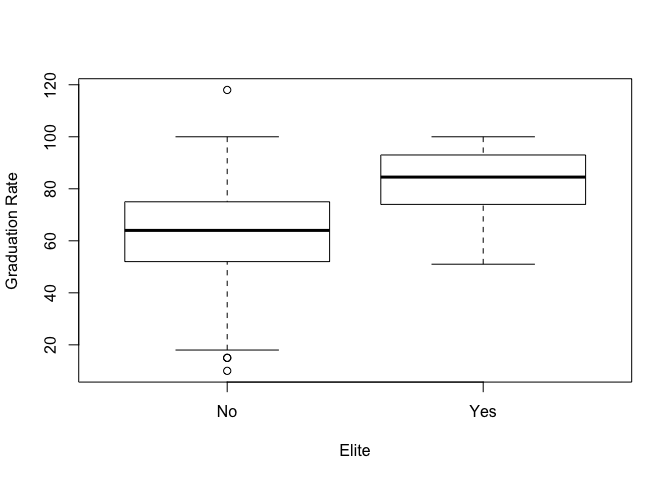
Elite institutions also exhibit a higher graduation rate. However since our operational definition for elite is based on the quality of students, this is unsurprising. Note that there’s some bad data in this set as one institution has a >100% graduation rate. Let’s instead investigate the direct correlation between instructional expenditure per student and graduation rate using a scatterplot.
plot(Expend, Grad.Rate, xlab="Expenditure per Student", ylab="Graduation Rate")
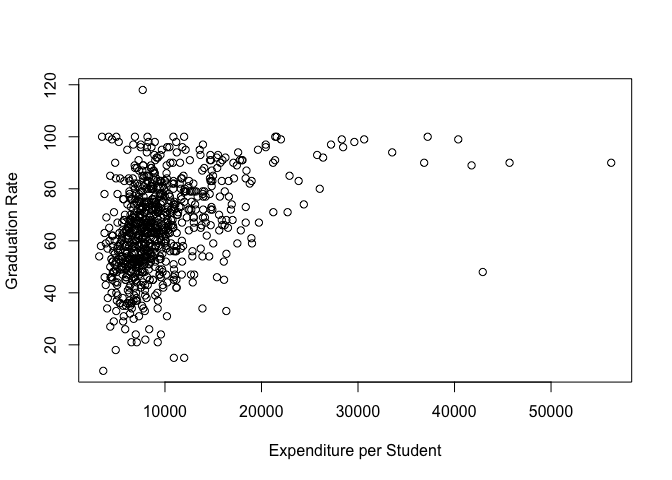
It appears that there is no strong correlation between graduation rate and expenditure per student until expenditure is more than $20,000. Though the outliers in this plot compress most of the data and make it hard to distinguish trends. Let’s create a log plot on the x-axis to see if it helps us spot any other trends.
plot(Expend, Grad.Rate, log = "x", xlab="Expenditure per Student", ylab="Graduation Rate")
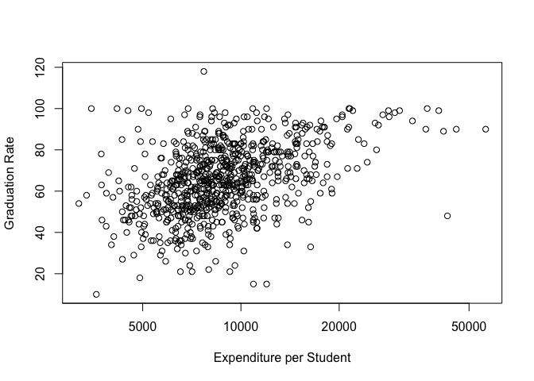
This gives us a better view, the data appears to at least be weakly correlated. Now that we’re done with this dataset let’s detach it, it’s still accessible via College but it’s variables aren’t directly int he search path.
detach(college)
auto = read.csv(file = "../datasets/Auto.csv", header = TRUE, na.strings='?')
auto = na.omit(auto)
attach(auto)
a)
dim(auto)
## [1] 392 9
summary(auto)
## mpg cylinders displacement horsepower
## Min. : 9.00 Min. :3.000 Min. : 68.0 Min. : 46.0
## 1st Qu.:17.00 1st Qu.:4.000 1st Qu.:105.0 1st Qu.: 75.0
## Median :22.75 Median :4.000 Median :151.0 Median : 93.5
## Mean :23.45 Mean :5.472 Mean :194.4 Mean :104.5
## 3rd Qu.:29.00 3rd Qu.:8.000 3rd Qu.:275.8 3rd Qu.:126.0
## Max. :46.60 Max. :8.000 Max. :455.0 Max. :230.0
##
## weight acceleration year origin
## Min. :1613 Min. : 8.00 Min. :70.00 Min. :1.000
## 1st Qu.:2225 1st Qu.:13.78 1st Qu.:73.00 1st Qu.:1.000
## Median :2804 Median :15.50 Median :76.00 Median :1.000
## Mean :2978 Mean :15.54 Mean :75.98 Mean :1.577
## 3rd Qu.:3615 3rd Qu.:17.02 3rd Qu.:79.00 3rd Qu.:2.000
## Max. :5140 Max. :24.80 Max. :82.00 Max. :3.000
##
## name
## amc matador : 5
## ford pinto : 5
## toyota corolla : 5
## amc gremlin : 4
## amc hornet : 4
## chevrolet chevette: 4
## (Other) :365
#fix(auto)
b)
We could apply range() to each variable individually bt that would be tedious and give output in an annoying form. Instead you can use sapply() which will apply a function to each element in the supplied vector and attempt to show the result in the most simplified way possible. Note that the dataset is already structured so all quantitative variables are grouped as the first 7 columns of the set.
sapply(auto[, 1:7], range)
## mpg cylinders displacement horsepower weight acceleration year
## [1,] 9.0 3 68 46 1613 8.0 70
## [2,] 46.6 8 455 230 5140 24.8 82
c)
sapply(auto[, 1:7], mean)
## mpg cylinders displacement horsepower weight
## 23.445918 5.471939 194.411990 104.469388 2977.584184
## acceleration year
## 15.541327 75.979592
sapply(auto[, 1:7], sd)
## mpg cylinders displacement horsepower weight
## 7.805007 1.705783 104.644004 38.491160 849.402560
## acceleration year
## 2.758864 3.683737
d)
To do this we’ll use the c() operator. It combines arguments into a vector, you can then use -c() to get the complement of the set it creates. Thus since we want to exclude rows 10->85, we create a set of those indexes then use the complement to generate the dataset we want.
auto_reduc = auto[-c(10:85),]
sapply(auto_reduc[, 1:7], range)
## mpg cylinders displacement horsepower weight acceleration year
## [1,] 11.0 3 68 46 1649 8.5 70
## [2,] 46.6 8 455 230 4997 24.8 82
sapply(auto_reduc[, 1:7], mean)
## mpg cylinders displacement horsepower weight
## 24.404430 5.373418 187.240506 100.721519 2935.971519
## acceleration year
## 15.726899 77.145570
sapply(auto_reduc[, 1:7], sd)
## mpg cylinders displacement horsepower weight
## 7.867283 1.654179 99.678367 35.708853 811.300208
## acceleration year
## 2.693721 3.106217
e)
pairs(auto)
MPG decreases exponentially with displacement, horsepower and weight. Horsepower increases linearly with weight. There’s a weak correlation showing cars becoming generally more efficient over time.
f)
MPG has correlations to all other variables except name, hence they can all be used as predictors.
detach(auto)
library(MASS)
attach(Boston)
?Boston
a)
dim(Boston)
## [1] 506 14
506 rows, 14 columns. Each row represents a tract within Boston, each column is a metric.
b)
pairs(Boston)
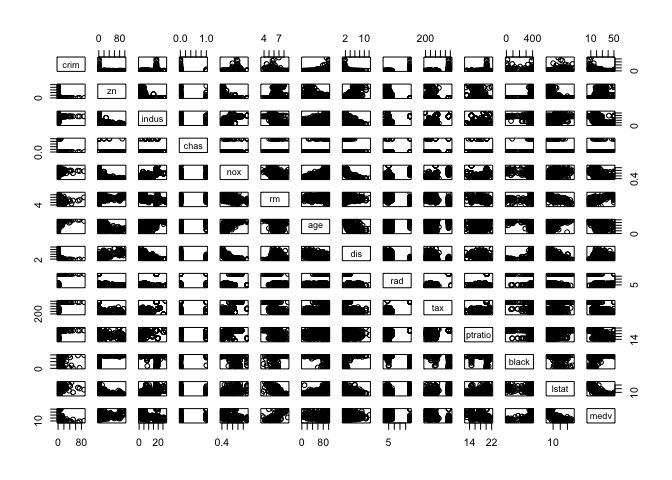
There’s a ridiculous amount of stuff going on here so we’ll only comment on a few things. Note that areas with greater proprtions of industrial businesses tends to have higher nitrogen oxide concentrations. Crime rate are higher in neighborhoods with higher proportions of older buildings. Tracts which bound the Charles river tends to have lower crime rates.
c)
Yes, already touched on a few above. Crime rate are higher in neighborhoods with higher proportions of older buildings. Tracts which bound the Charles river tends to have lower crime rates. Crime rates increase with proximity to employment centers. Crime rates increase with property tax rates. Crime rates decrease with the median value of owner occupied homes.
d)
sapply(list(crim, tax, ptratio), range)
## [,1] [,2] [,3]
## [1,] 0.00632 187 12.6
## [2,] 88.97620 711 22.0
boxplot(crim)
title("per capita crime rate")
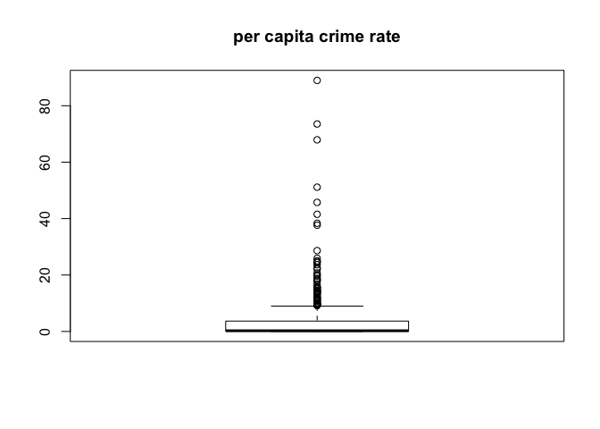
boxplot(tax)
title("property tax rate")
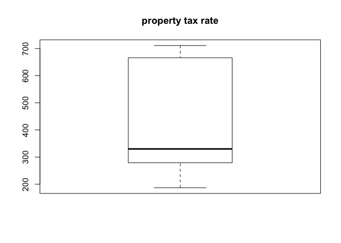
boxplot(ptratio)
title("pupil-teacher ratio")
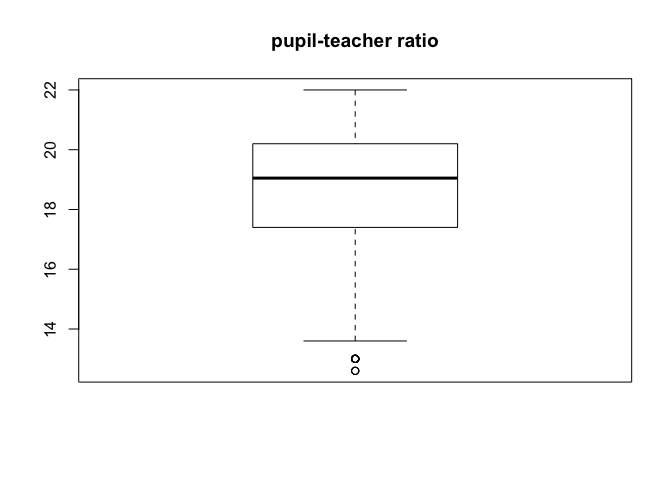
There are notable tracts where crime rate is much higher than the typical norm, and some tracts where pupil-teacher ratio is quite low. There are not any significant outliers when it comes the property tax rate. It should also be noted that there are a number of tracts in which crime rate is near zero, they may be strictly non-residential areas. Regardless without being certain as to how that data is sourced it hould be noted that analysis of relationships involving crime rate using this data set could be skewed.
e)
table(chas)
## chas
## 0 1
## 471 35
35 tracts bound the Charles river.
f)
median(ptratio)
## [1] 19.05
g)
So this is a little trick, I’m calculating the percentile of each predictor value in the tract which has the lowest median value home relative to each predictors dataset.
min_ind = which.min(medv)
Boston[min_ind, ]
## crim zn indus chas nox rm age dis rad tax ptratio black
## 399 38.3518 0 18.1 0 0.693 5.453 100 1.4896 24 666 20.2 396.9
## lstat medv
## 399 30.59 5
mapply(function(x, i) ecdf(Boston[, i])(x), Boston[min_ind, ], seq_along(Boston[min_ind, ]))
## crim zn indus chas nox rm
## 0.988142292 0.735177866 0.887351779 0.930830040 0.857707510 0.077075099
## age dis rad tax ptratio black
## 1.000000000 0.057312253 1.000000000 0.990118577 0.889328063 1.000000000
## lstat medv
## 0.978260870 0.003952569
We can see that this tract of land also has the highest proportion of old houses, highest accessibility to radial highways, and highest proportion of black population. It also has significantly high crime rate, proportion of large lots of residential land, industrial business land area, nitrogen oxide concentrations, property tax rate, pupil teacher ratio, and low-skill workers (lstat). It also has significantly low number of average rooms per dwelling, and is extremely close to major employment centres.
h)
table(rm > 7)
##
## FALSE TRUE
## 442 64
table(rm > 8)
##
## FALSE TRUE
## 493 13
mapply(
function(feature, i) {
mapply(function(x, i) ecdf(Boston[, i])(x), feature, i);
},
Boston[which(rm > 8), ],
seq_along(Boston[which(rm > 8), ])
)
## crim zn indus chas nox rm
## [1,] 0.34387352 0.7351779 0.10079051 0.93083 0.21936759 0.9802372
## [2,] 0.69367589 0.7351779 0.94664032 1.00000 0.70158103 0.9920949
## [3,] 0.03557312 0.9980237 0.09090909 0.93083 0.09090909 0.9762846
## [4,] 0.52766798 0.7351779 0.35770751 0.93083 0.39525692 0.9861660
## [5,] 0.58893281 0.7351779 0.35770751 0.93083 0.39525692 0.9980237
## [6,] 0.56126482 0.7351779 0.35770751 0.93083 0.39525692 0.9782609
## [7,] 0.60474308 0.7351779 0.35770751 0.93083 0.41501976 0.9901186
## [8,] 0.53952569 0.7351779 0.35770751 0.93083 0.41501976 0.9822134
## [9,] 0.55533597 0.8280632 0.29841897 0.93083 0.14229249 0.9841897
## [10,] 0.61067194 0.8003953 0.18181818 0.93083 0.78458498 0.9960474
## [11,] 0.58498024 0.8003953 0.18181818 0.93083 0.78458498 0.9940711
## [12,] 0.60671937 0.8003953 0.18181818 0.93083 0.60079051 0.9881423
## [13,] 0.74308300 0.7351779 0.88735178 1.00000 0.92687747 1.0000000
## age dis rad tax ptratio black
## [1,] 0.48418972 0.5494071 0.08695652 0.22332016 0.37549407 1.0000000
## [2,] 0.74703557 0.2766798 0.60671937 0.66798419 0.10079051 0.4110672
## [3,] 0.14229249 0.7490119 0.37944664 0.08695652 0.10079051 0.4624506
## [4,] 0.50988142 0.4644269 0.73913043 0.45454545 0.28458498 0.3537549
## [5,] 0.55928854 0.4644269 0.73913043 0.45454545 0.28458498 0.3201581
## [6,] 0.60869565 0.5039526 0.73913043 0.45454545 0.28458498 0.3932806
## [7,] 0.46442688 0.5968379 0.73913043 0.45454545 0.28458498 0.3656126
## [8,] 0.44071146 0.5671937 0.73913043 0.45454545 0.28458498 0.3023715
## [9,] 0.01976285 0.9802372 0.69169960 0.50592885 0.53359684 1.0000000
## [10,] 0.61067194 0.1501976 0.60671937 0.17786561 0.02964427 0.4367589
## [11,] 0.69367589 0.3122530 0.60671937 0.17786561 0.02964427 0.3853755
## [12,] 0.41106719 0.3458498 0.60671937 0.17786561 0.02964427 0.3478261
## [13,] 0.55533597 0.1877470 1.00000000 0.99011858 0.88932806 0.1778656
## lstat medv
## [1,] 0.075098814 0.9367589
## [2,] 0.035573123 1.0000000
## [3,] 0.011857708 1.0000000
## [4,] 0.071146245 0.9565217
## [5,] 0.098814229 1.0000000
## [6,] 0.027667984 0.9328063
## [7,] 0.007905138 0.9426877
## [8,] 0.065217391 0.9644269
## [9,] 0.043478261 0.9466403
## [10,] 0.132411067 1.0000000
## [11,] 0.179841897 0.9683794
## [12,] 0.280632411 1.0000000
## [13,] 0.144268775 0.5474308
These percentiles show that the higher the average number of rooms, the higher the median value of the home which should be self-explanatory. These tracts also have typically high proportions of residential land zoned for lots over 25,000 square feet. They also mostly have better than average accessibility to radial highways though there is one significant outlier to that trend. They also tend to have lower proportions of low-skill workers, i.e. the lstat variable.